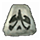
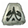
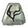
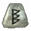
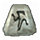
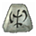

Escudos
Dragon
 Sur •
Sur •
 Lo •
Lo •
 Sol
Sol
Req level: 61
Armaduras y Escudos de 3 socket
- 20% de posibilidades de lanzar el nivel 18 Veneno al recibir un azote
- 12% de posibilidades de lanzar el nivel 15 Hidra al azotar
- Nivel 14 del aura Fuego Sagrado cuando estás equipado
- +300 Defensa
- +3-5 a todos los atributos
- +37 de fuerza muerto viviente
- +50 de maná
- +5% a la resistencia máxima a los relámpagos
- Daño reducido en 7

Promesa de los Ancianos
 Ral •
Ral •
 Ort •
Ort •
 Tal
Tal
Req level: 21
Escudos de 3 socket
- Resistencia al frío 30-30
- Resistencias all 13-13
- +50% defensa perfeccionada
- +10% el daño infligido repercute en el maná
×

Espíritu
 Tal •
Tal •
 Thul •
Ort •
Thul •
Ort •
 Amn
Amn
Req level: 25
Escudos de 4 socket
- +2 a todas las habilidades
- +25-35% Velocidad de lanzamiento mayor
- +55% Recuperación de impacto más rápida
- +250 Defensa contra Misil
- +22 de vitalidad
- +89-112 de maná
- Resistencia al frío +46%
- Resistencia a los rayos +46%
- Resistencia al fuego +11%
- Resistencia al veneno +46%
- El atacante recibe el daño de 14
- Requisitos -15%
×

Esplendor
 Eth •
Eth •
 Lum
Lum
Req level: 37
Escudos de 2 socket
- +1 a todas las habilidades
- +10% Velocidad de lanzamiento mayor
- +20% Velocidad de bloqueo mayor
- +60-100% Defensa perfeccionada
- +10 de energía
- Regenerar maná 15%
- 50% oro extra de los monstruos
- 10% más posibilidades de conseguir un objeto mágico
- +3 al Radio de luz
×

Fénix
 Vex •
Vex •

Lo •
Vex •
Vex •

Lo •
 Jah
Jah
Req level: 65
Escudos de 4 socket (Sólo Paladín)
- 40% de posibilidades de lanzar el nivel 22 Tormenta de fuego al azotar
- Nivel 12 del aura Redención cuando estás equipado (10-15)
- +350-400% Daño mejorado
- -28% para Resistencia al fuego enemiga
- +350-400 Defensa contra Misil
- +50 de vida
- +5% a la resistencia máxima a los relámpagos
- +10% a la resistencia máxima al fuego
- Todas las Resistencias +11
- +15-21 Absorción de fuego
×

Gloria

Ist •
Ist •
Ist •
Ist
Req level: 51
Escudos de 4 socket (Sólo Paladín)
- +1-2 a todas las habilidades
- +25-50% Velocidad de lanzamiento mayor
- +15-30% Recuperación de impacto más rápida
- +75-150% Defensa perfeccionada
- Aumenta la vida máxima 25%
- Aumenta el maná máximo 25%
- Todas las Resistencias +11
- 100% más posibilidades de conseguir un objeto mágico
- Requisitos -20-30%
×

Obscuridad

Cham •

Sur
Req level: 67
Escudos de 2 socket (Sólo Nigromante)
- Nivel 10 del aura Meditación cuando estás equipado
- +3 a todas las habilidades
- +3 para habilidades de veneno y hueso (Sólo Nigromante)
- +43% Velocidad de bloqueo mayor
- Añade 2-7 de daño de veneno durante 3 segundos
- +1 para Teletransportador
- +18 a todos los atributos
- +50 de maná
- Todas las Resistencias +32
×

Rima
 Shael •
Eth
Shael •
Eth
Req level: 29
Escudos de 2 socket
- +40% Velocidad de bloqueo mayor
- 20% aumenta la posibilidad de bloqueo
- Regenerar maná 15%
- Todas las Resistencias +25
- 50% oro extra de los monstruos
- 25% más posibilidades de conseguir un objeto mágico
×

Santuario
 Ko •
Ko •
Ko •
Ko •
 Mal
Mal
Req level: 49
Escudos de 3 socket
- +20% Recuperación de impacto más rápida
- +20% Velocidad de bloqueo mayor
- 20% aumenta la posibilidad de bloqueo
- +143% Defensa perfeccionada
- +250 Defensa contra Misil
- +20 de destreza
- Todas las Resistencias +69
- Daño de magia reducido en 7
- Nivel 12 Misiles lentos (60/60 cargas)
×

Sueño

Io •
Jah •
 Pul
Pul
Jah •
Pul
Req level: 65
Escudos de 3 socket
- 10% de posibilidades de lanzar el nivel 15 Confusión al recibir un azote
- Nivel 15 del aura Golpe sagrado cuando estás equipado
- +20-30% Recuperación de impacto más rápida
- +30% Defensa perfeccionada
- +150-220 Defensa
- +10 de vitalidad
- +50 de vida
- +61 de maná muerto viviente
- Todas las Resistencias +15-20
- 12-25% más posibilidades de conseguir un objeto mágico
×

Tradición
 Ber •
Ber •
 Um •
Cham •
Um •
Cham •
 Hel
Hel
Req level: 67
Escudos de 4 socket (Sólo Paladín)
- +3 a todas las habilidades
- +40-50% Velocidad de lanzamiento mayor
- +40-50% Recuperación de impacto más rápida
- +25-35% Velocidad de bloqueo mayor
- +175-225% Defensa perfeccionada
- Todas las Resistencias +13-33
- Daño reducido en 1-8%
- Repara 1 de durabilidad en 4 segundos
- Requisitos -15%
×

Voluntad del Cielo
Sur •
Lo •
 Ohm •
Um
Ohm •
Um
Ohm •
Um
Req level: 61
Escudos de 4 socket (Sólo Paladín)
- Nivel 15 del aura Concentración cuando estás equipado
- +2 a todas las habilidades
- +24% Recuperación de impacto más rápida
- +24% Velocidad de bloqueo mayor
- +70% Daño mejorado
- +290 de daño
- +29 de puntuación de ataque
- +283% Defensa perfeccionada
- +50 de maná
- +5% a la resistencia mínima al fuego
- +5% a la resistencia máxima a los relámpagos
- Todas las Resistencias +22
- Repara 1 de durabilidad en 20 segundos
×

Bruma
Ber •
Sur •
Vex
Req level: 63
Escudos de 3 socket
- Nivel 5 del aura Salvación cuando estás equipado
- +3 a los niveles de habilidad de la amazona
- +40-50% Recuperación de impacto más rápida
- +40-50% Velocidad de bloqueo mayor
- 40-50% aumenta la posibilidad de bloqueo
- +100-200% Defensa perfeccionada
- +50 de maná
- Regenerar maná 1.50-2.50%
- +5% a la resistencia máxima al fuego
- Daño reducido en 17-27%
×